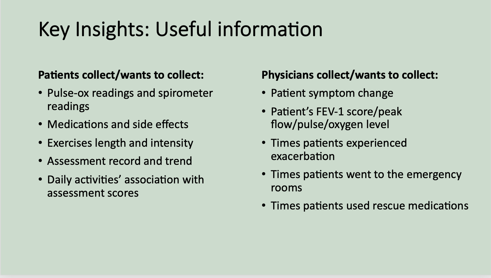

Design UXR Case Study
In-Depth Interview + Concept Testing
This is a design iteration user research project I led at a healthcare company. The high level objective of the study is to explore how to make the healthcare data collected from the app useful to both patients and physicans. Some information is removed or modified due to confidentiality.
Background & Goals
With chronic conditions on the rise comes staggering costs. Virtual healthcare and personalized management breaks down barriers for the patients, providing the value-based care they need at home, leading to overall lower financial burn and better outcomes. Our app and digital care service had already been used by the patients in several clinical trails. According to the findings from the last UXR study, potential users are interested in seeing their healthcare data collected from the app being transfered to readable reports that are benificial to both the patients and their healthcare providers. As such, the clinical team and the product team collaborated together to develop new features.
Our main research goal is:
-
- Understand how and what information is useful to include in a report for both the patients and the physicans in managing chronic disease.
-
We have already learnt from the last UXR research that the users are interested in seeing reports of their healthcare data that they can review themselves and take to the doctors. However, we have no idea what information and data should be included to make the report useful for both the users and the physicans. As such, we spent 2 weeks in learning from our users and physicans about their opinions.
About our participants and process:
We conducted 10 in-depth interviews with potential users and healthcare providers. Each of the sessions lasted for 45 minutes.
- 5 potential users are recruited from UserInterview.com
- 3 potential users are female, 2 potential users are male
- Potential users length of chronic disease range from 5-20+yrs
- 5 physicians/respiratory specialists recruited through internal connections
- We have 3 pulmonologist and 2 primary care physicians
- Their length of practice range from 10-25 years
-
A few research questions for the users:
- How do you manage your chronic disease? Why?
- What has been helpful/unhelpful in managing your chronic disease? Why?
- What information do you think is important to tell your doctor during the appointment?
- What types of information or record do you usually bring to the doctors' during your appointment?
- Do you record your symptoms, medication history or data logs somewhere? Why?
- What types of information do you expect to see on a report of your disease management? Why?
A few research questions for the healthcare providers:
- How do you manage a COPD patient today? What tools and information do you use? How do you use this information to make changes to a patient’s treatment?
- What information is useful for you to make critical treatment decisions?
- Do patients ever bring symptom, medication, or data logs to their appointments for you to review or to discuss with you? Do you use this information, if so how? If not, why not?
- What data is considered actionable data for physicians? Why?
Data Synthesis & Insights
After talking to both the patients and the healthcare providers, I organized the transcripts and the notes into a new document. Here are some slides and pictures.
Based on these insights, I recommend addressing these key information in the new feature:

Concept Testing
-
Now that we have a basic idea of what kind of information is helpful to the patients and the physicians, the design team incorporate all the elements and came up with a prototype. To back up the design strategies, I conducted a concept testing research to gather insights. All the participants we talked to during our in-depth interviews were happy to talk with us again and offer their point of views for our prototype.
A few research questions:
- What are your immediate first impressions looking at this report?
- Can you describe the elements you are seeing on the report?
- Is there anything on the report that is confusing or not clear to you?
- What information is the report conveying to you? How would you use this information?
- Would this report be helpful to you? If so, how? If not, why not?
- Is there any information that you think is missing that you wish were there or you would expect to see?
Data Synthesis & Insights
I put users' comments of the design into a spreadsheet, categorized by the report sections and information.
Some key findings are:
Based on these findings, I recommended:
Impacts
- Created and documented the in-depth interview and concept testing protocol across the product team
- Through collaboration, designers were able to incorporate user feedbacks into the product
- Clinical team was able to collaborate with the product team to develop new features on the app
- Opened up possibility of new feature development in the long run
My Role
- Held brain-storming sessions
- Created research plan with the help of other stakeholders
- Recruited and selected the potential users for interviews
- Conducted 10 interview as moderator and trained key-stakeholders as note-takers
- Generated insights from qualitative data
- Presented summary and findings to the cross-functional team
Stakeholder Meetings + Presentations
Right from the beginnig of this project, we held several brain-storming sessions to get input from different stakeholders. With the help of the designer, product manager, and clinical team, I was able to set up a study plan, and collect researcg questions from stakeholders. Every key stakeholders are imvolved in the research from start to end. They were invited to sit in the interviews as silent observers or note takers. The picture on the left is a screenshot of me training designers to take notes on the interview sessions. I presented the research results to the cross-functional team several times. Also, the product team and the engineering team are collaborating together to further explore the fesability of collecting other data from the users.
Research Process
Throughout the project, I collaborated with clinical leads, product manager, and designers to streamline the development of new feature through in-depth interview, and concept testing. Here is the overview of what our process looks like.